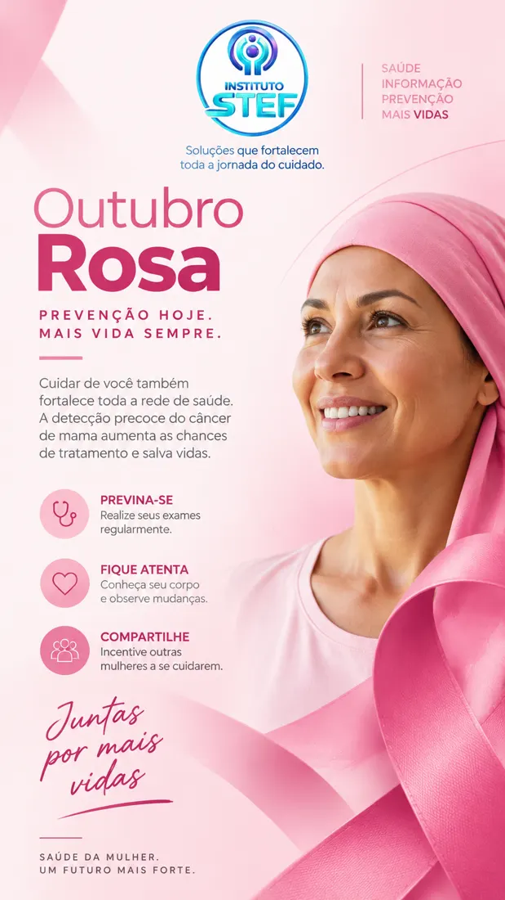
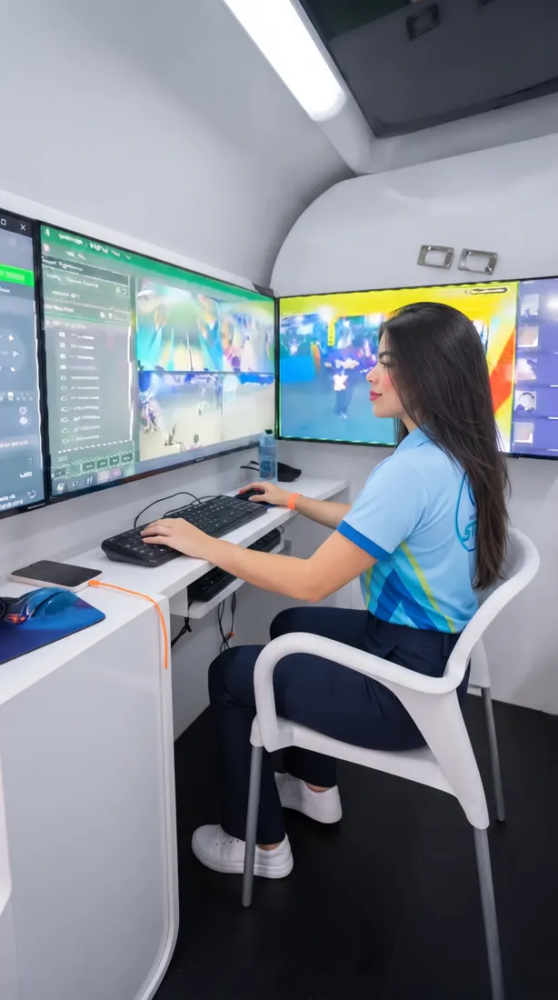
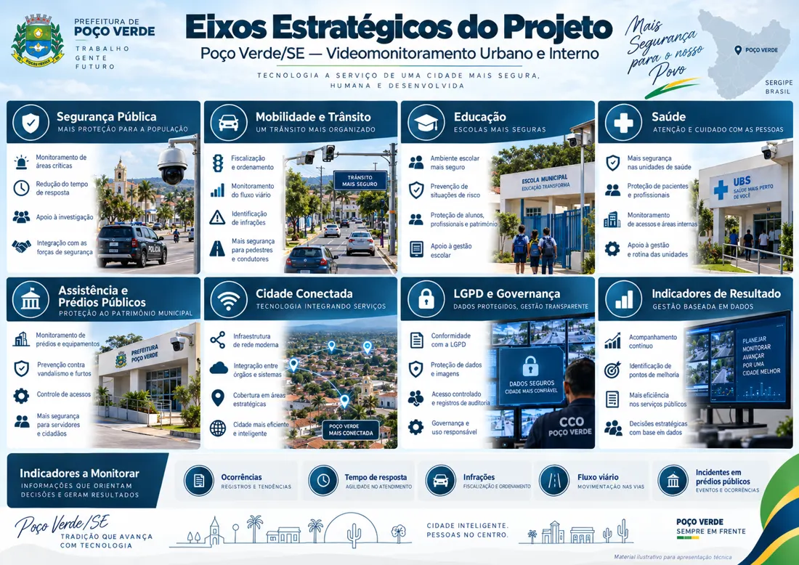
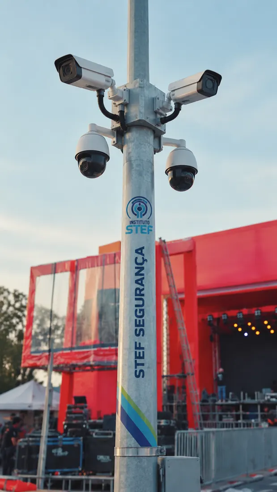
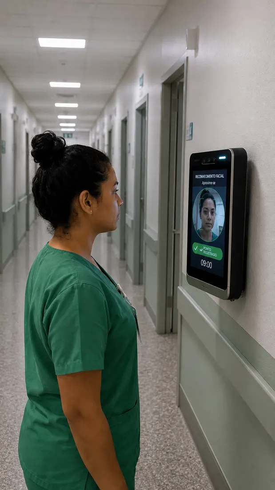

Tecnologia, formação e cuidado para fortalecer a gestão pública e chegar a quem mais precisa.
O Instituto STEF desenvolve soluções para fortalecer a gestão da saúde pública, integrando tecnologia, qualificação profissional, planejamento e apoio operacional.
Atuamos ao lado dos gestores públicos na construção de serviços mais eficientes, humanizados e sustentáveis, com foco na ampliação do acesso e na qualidade assistencial.
Cuidado integral e humanizado, com foco na qualidade, na inovação e no impacto positivo nas comunidades. A jornada do cuidado conecta pessoas, equipes, processos e serviços.
STEF Saúde Comunitária: ação com atendimento ao idoso e vacinação.
A jornada do cuidado
Zera Fila
Tendas montadas na rua para o mutirão de saúde.
Mutirões e redução de filas. Atendimentos organizados por cidade para ampliar o acesso, enfrentar a demanda reprimida e acolher cada pessoa com respeito.
Mutirões de consultas especializadas
Mutirões de exames laboratoriais e de imagem
Mutirões cirúrgicos eletivos
Ação recente: Cedro, Ceará, com a ação “Saúde que Avança”.
Campanha do mês

Outubro Rosa: juntas por mais vidas. Prevenção do câncer de mama.
Área de atuação
Segurança
Tecnologia aplicada à prevenção, ao monitoramento e à melhoria da gestão pública, sempre para apoiar a atuação humana.

O que oferecemos
Videomonitoramento
Câmeras, CFTV e centrais de acompanhamento.
Identificação
Soluções integradas a protocolos de segurança e proteção de dados.
Controle de acesso
Entradas, permissões, catracas e fluxo de pessoas.
Alarmes e painéis
Multas, alarmes, CFTV e painéis de controle.
Projeto em destaque
Poço Verde / SE
Cidade Digital Inteligente 360
Segurança, mobilidade, conectividade e gestão baseada em dados.
Estudo técnico do Instituto STEF (setembro de 2026) para uma plataforma municipal integrada. O objetivo não é só instalar câmeras: é capturar eventos, validar alertas, coordenar respostas e medir resultados.
22.217habitantes (estimativa IBGE 2025)
441 km²de área territorial
9.314veículos na frota (DETRAN/SE, ago/2026)
24 hCentro de Comando (CCO) proposto
Como funciona
CampoCâmeras PTZ, fixas, leitores de placas (LPR) e sensores.
TransporteFibra óptica, rede IP segregada e contingência por rádio.
Centro de ComandoVideowall, gravação, mapas e operadores que validam e despacham ocorrências.
InteligênciaLeitura de placas, fluxo de trânsito, regras de cena e alertas.
GestãoIndicadores, auditoria, relatórios e integração entre órgãos.

Eixos estratégicos: segurança, mobilidade, educação, saúde, cidade conectada e governança.
Implantação por etapas
Mês 0 a 2: diagnóstico
Levantamento de dados, riscos e inventário, projeto executivo e regras de governança.
Mês 2 a 6: projeto piloto
Leitor de placas em acesso estratégico, câmeras em ponto de grande circulação, uma escola ou UBS e um Centro de Comando mínimo. Depois, avaliação e ajustes.
Mês 5 a 12: expansão
Rede de fibra, expansão priorizada das câmeras, unidades internas (escolas, UBS e prédios) e integrações.
Após 12 meses: evolução
Revisão de resultados. No futuro: Wi-Fi público, iluminação inteligente, sensores e integração com a Defesa Civil.
Privacidade em primeiro lugar
Toda câmera precisa responder: por que existe, quem pode ver, por quanto tempo a imagem fica guardada e quem consultou.
Perfis de acesso e registro de todas as consultas
Nada de câmeras em áreas com expectativa de privacidade
Reconhecimento facial não é item padrão: só com base legal, avaliação independente e validação humana
Segurança cibernética, backups e conformidade com a LGPD
“Cidade inteligente não é apenas enxergar mais. É transformar informação em decisão, decisão em resposta e resposta em qualidade de vida.”Estudo técnico Poço Verde Cidade Digital Inteligente 360

Câmeras em via pública

Controle de acessoCentral de monitoramento
Entrevista
A palavra do presidente
Henrique Pereira, presidente do Instituto STEF, conversa com Alana Sobreira sobre o Projeto Apoiar.
Duração: 8 min 51 s. Toque em um tema para ir direto ao trecho.
“A visão aqui é levar para a sociedade o que está longe deles.”Henrique Pereira, presidente do Instituto STEF
Temas da entrevista
STEF animado
Conheça o Instituto STEF em animação. Duração: 1 min 41 s.
Projeto Apoiar em 3 passos
Capacitar e homologarAssociações, cooperativas e instituições públicas ou privadas recebem capacitação e apoio jurídico, contábil e documental.
Projetos que fazem sentidoCada projeto é elaborado conforme a necessidade da localidade e de quem mora nela.
Profissionais da regiãoPessoas capacitadas perto de casa: menos custo, menos deslocamento e uma economia local mais forte.
“Espero que isso venha se concretizar em todo o território nacional.”Henrique Pereira
Contato
Fale com o Instituto STEF
Aberto ao diálogo com municípios, instituições, profissionais e comunidades.